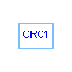
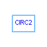
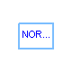

SPICELib
.tutorial
SPICELib tutorial



Information
SPICE
Lib tutorial
tutorial
package contains some examples illustrating the capabilities of
SPICE
Lib for circuit modeling & analysis. Each subpackage of
tutorial
contains an example. See these subpackages documentation.
Name
Description
circ1
Example 1 of SPICELib tutorial
circ2
Example 2 of SPICELib tutorial
nandcmos
Nand gate
norcmos
Nor gate
HTML-documentation generated by
Dymola
Tue Oct 14 18:26:24 2003 .